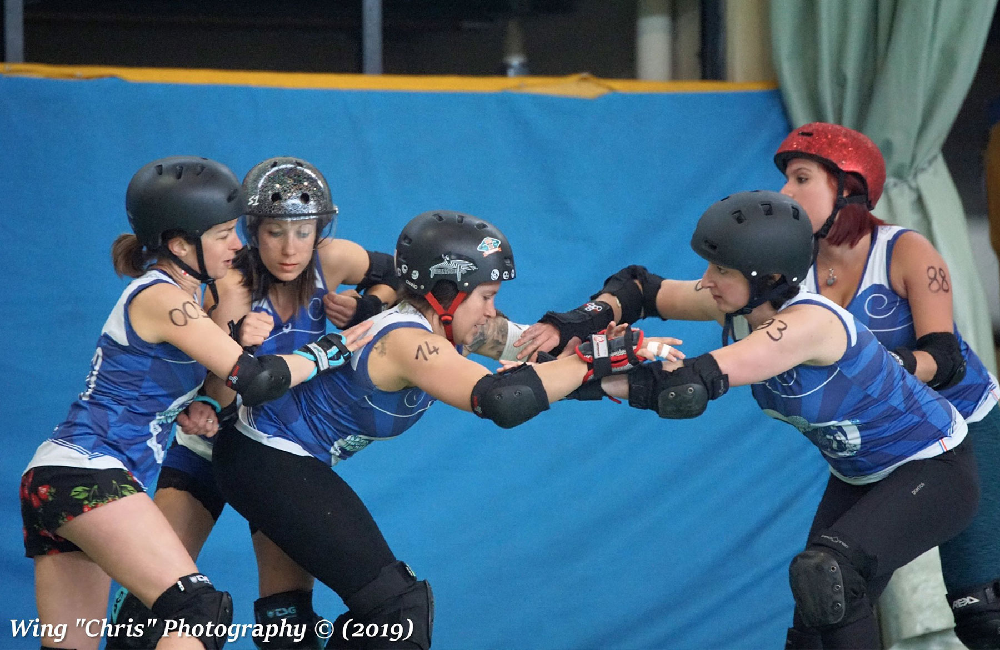
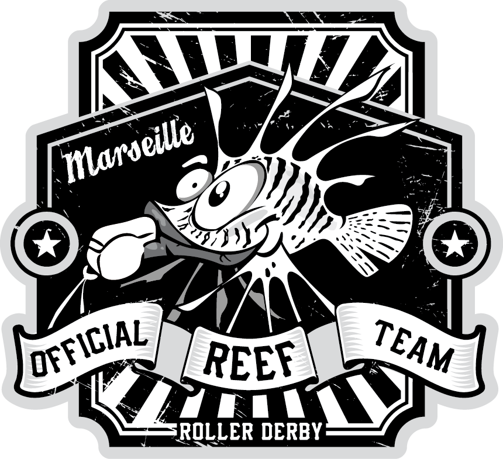

<section *ngIf="teams$ | async as teams">
  <sub-nav
    [menu]="equipeMenu"
    [route]="equipeRoute"
    [elementNumber]="4"
  ></sub-nav>
  <scroll-icon *ngIf="showScroll"></scroll-icon>
  <article
    id="{{ equipeMenu[i].ancre }}"
    *ngFor="let team of teams; let i = index"
  >
    <div>
      
      <div class="blue-background">
        
        <h1>{{ team.teamName }}</h1>
        <div class="intro-container">
          <p>{{ team.teamStory }}</p>
          <a href="{{ team.flatTrackUrl }}"
            >Tous les résultats des {{ team.teamName }} ></a
          >
        </div>
      </div>
    </div>
  </article>
  <!-- <article id="{{ equipeMenu[1].ancre }}">
    <div>
      
      <div class="blue-background">
        
        <h1>Mars Invaders</h1>
        <div class="intro-container">
          <p>
            Seconde équipe de Marseille crée en 2016 avec la vague de nouvelles
            recrue sur-motivées ! L’équipe integrera même le Championnat en
            Nationale 2 l’année suivante pour une saison. Aujourd’hui c’est
            l’équipe hors championnat du club, elle affronte d’autre équipes
            lors d’evenements « loisir ».
          </p>
          <a href="http://flattrackstats.com/teams/88628"
            >Tous les résultats des Mars Invaders ></a
          >
        </div>
      </div>
    </div>
  </article>
  <article id="{{ equipeMenu[2].ancre }}">
    <div>
      
      <div class="blue-background">
        
        <h1>Chapacans</h1>
        <div class="intro-container">
          <p>
            Bien que l’association ai toujours eu des hommes (coachs,
            arbitres...), ils n’étaient malheureusement pas assez nombreux pour
            créer une équipe... Jusqu’en 2015 où les joueurs téméraires ont
            fondé les Chapacans ! Encore trop peu nombreux pour integrer le
            Championnat, l’équipe s’est associé avec celle d’avignon (les Warren
            Track Fighters) en 2019 pour intégrer le championnat de France en
            Nationale 1 !
          </p>
          <a href="http://flattrackstats.com/teams/41270"
            >Tous les résultats des Chapacans ></a
          >
          <a href="http://flattrackstats.com/teams/112544"
            >Tous les résultats des Gerbes de Provence ></a
          >
        </div>
      </div>
    </div>
  </article>
  <article id="{{ equipeMenu[3].ancre }}">
    <div>
      
      <div class="blue-background">
        
        <h1>Rascasses</h1>
        <div class="intro-container">
          <p>
            Les arbitres sont necessaire dans le Roller Derby, et surtout, il en
            faut beaucoup pour organiser un match. C’est pour ça que le MRDC à
            crée une équipe d’arbitre pour motiver ses recrues à s’initier à
            l’arbitrage. Nous organisons aussi des Bootcamps (formation) et nos
            arbitres participent à de nombreux evenement en France et à
            l’international.
          </p>
        </div>
      </div>
    </div>
  </article> -->
</section>
